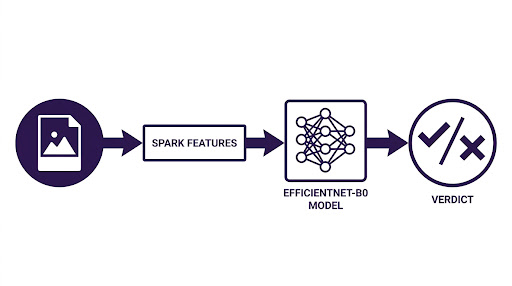

account_balance
Defactify
Descubra la Verdad en Imágenes
Un análisis forense impulsado por IA para distinguir entre fotografías reales e imágenes generadas artificialmente con precisión científica.

science
Metodología de Análisis
Detección Inteligente
Nuestro sistema evalúa artefactos visuales, consistencia de iluminación y anomalías a nivel de píxel que el ojo humano suele pasar por alto, diferenciando lo real de lo artificial.
Precisión Forense
Impulsado por el modelo EfficientNet-B0, optimizado para la clasificación de imágenes de alta eficiencia, garantizando resultados rápidos y confiables en cada análisis.
Subir o Tomar Foto
Arrastra un archivo aquí o haz clic para examinar tu dispositivo.
Resultado del Análisis
analytics
Inconcluso
Fotografía Real (Física)
50%
Imagen Sintética (Generada por IA)
50%